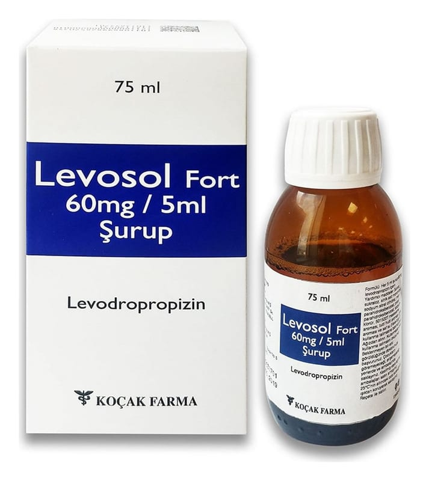

Levosol Fort 60 mg / 5 ml Şurup, 75 ml

Ne için kullanılır
KT · Bölüm 1LEVOSOL FORT, 100 ml'lik şişelerde, 1,5 ml, 2,5 ml, 5 ml çizgili ölçek ile beraber sunulan şuruptur. LEVOSOL FORT etkin madde olarak levodropropizin içerir. Çe şitli nedenlere bağlı kuru öksürüğün giderilmesinde kullanılır.